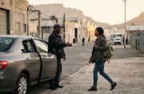
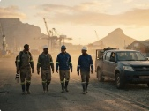

1. Register Your Work Route
Tell us your pickup area, workplace area, shift time and the days you need transport.
Pool Up connects verified drivers with people travelling to work along similar routes.
Passengers get a more affordable way to reach work. Drivers receive value from seats that would otherwise travel empty. Communities gain better access to employment and opportunity.
Verified membersPrepaid ride creditWork routesLocal support
Cape Town pilot · Proposed work routes
Finding work is difficult enough. Reaching work should not become the reason someone loses that opportunity.
Across Cape Town, many workers travel long distances, start early shifts and spend a large part of their income on transport.
At the same time, thousands of vehicles travel along the same routes with available seats.
Pool Up was created to bring these journeys together.
One person may need a ride. Several people travelling at the same time can create a reliable route.
Tell us your pickup area, workplace area, shift time and the days you need transport.
We group commuters travelling in the same direction and match them with verified drivers or approved transport partners.
Once your route and price are confirmed, you add prepaid credit to your Pool Up account.
Your booking, driver details, meeting point and journey information are confirmed before the trip.

Pool Up focuses on regular work travel.
This includes workers travelling to factories, warehouses, offices, retail centres, hospitals, hotels, restaurants, security sites, industrial areas and other places of employment.
Our first version focuses mainly on trips to the workplace.
Return routes will be introduced where there is enough demand and suitable driver availability.
Access more affordable work travel without negotiating prices or exchanging cash inside the vehicle.
Receive a contribution towards a journey you are already making.
Support staff attendance by helping employees access reliable shared routes.
Improve access to employment, interviews, training and economic opportunity.
A small and transparent service fee helps us manage verification, route matching, payments, support and future growth.
A reliable ride can help someone arrive for a shift, attend an interview, complete a training programme or keep a new job.
Pool Up is building a practical transport solution based on dignity and fair exchange.
People who can pay contribute a fair amount. Drivers receive fair value.
Foundations, charities and employers can sponsor ride credit for approved individuals who need additional support.
Transport is often the missing link between a person and the opportunity an organisation has created for them.
Pool Up works with community organisations, foundations, charities, employers and skills programmes to develop sponsored work routes and ride credit programmes.
We are starting with selected work corridors based on real registrations.
One proposed starting route is:
Muizenberg to Airport Industria
Registering does not guarantee an immediate ride. It helps us understand demand and build the next active route.